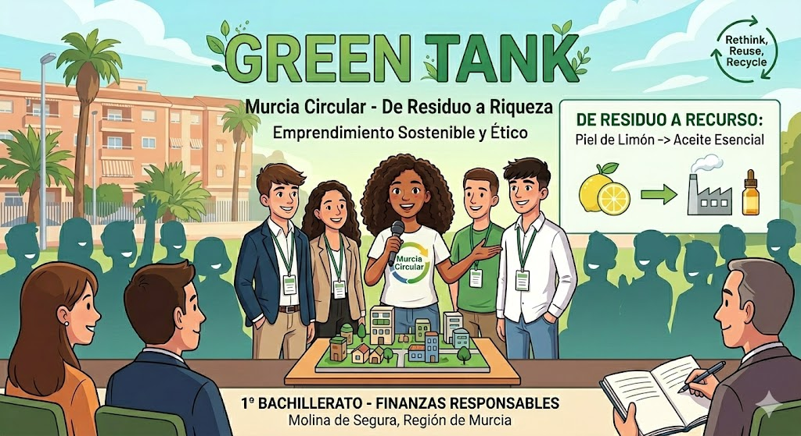

🦈 ¡Bienvenidos al Green Tank! 🦈
Llegó el momento de la verdad. Todo el trabajo, la investigación sobre nuestra región y los debates en equipo de las últimas semanas se resumen en los próximos 50 minutos.
Hoy no sois alumnos de 1º de Bachillerato, sois emprendedores buscando financiación. Respirad hondo, confiad en vuestro proyecto y demostrad que la solución a los problemas de la Región de Murcia está en esta clase.
¡Mucha suerte a todos los equipos!
